Join the Mystic Adventure
SHINSEI
VILLAGE
Genuine Storytelling Project

Vision
Collection
Roadmap
Team
Mint↗
Wallet Checker ↗
VISION
Shinsei Village is a collection featuring 1,200 demigod monkeys,
unraveling
a mysterious case to save their village. The project is
not just a PFP collection,
but a fascinating on-chain storyline.
Through a focus on community engagement,
the project seeks
to build the new era of Web3 entertainment.
Each stage of development is aimed to deliver the adventure
experience to the community, as well as provides rewards
and benefits for all holders. Solve weekly puzzles to open
mystic boxes and collect $CLUE! Uncovering the plot is
entirely
up to the vote and decisions of the community.